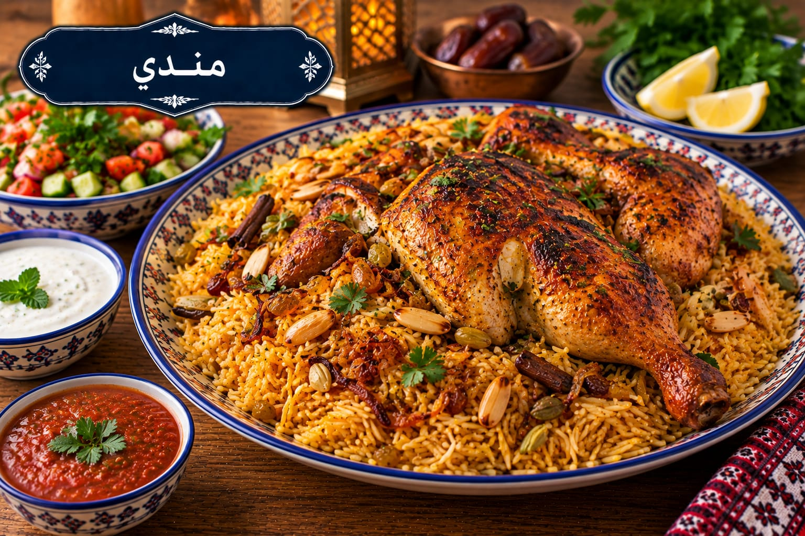

مندي
دجاج وأرز بنكهة المندي

مقادير مندي
- 1 دجاجة 1.4 كغ
- 3 أكواب أرز بسمتي
- 1 بصلة
- 2 طماطم
- 4½ أكواب مرق دجاج
- 2 ملعقة كبيرة زيت
- 1½ ملعقة صغيرة ملح للأرز
- 1 ملعقة صغيرة ملح للدجاج
- ½ ملعقة صغيرة فلفل أسود
- 1 ملعقة صغيرة بهار مندي
- ½ ملعقة صغيرة كركم
- 5 حبات هيل
- 2 ورق غار
- عود قرفة
طريقة عمل مندي
- تبلي الدجاج بملح الدجاج ونصف بهار المندي والفلفل واتركيه 30 دقيقة.
- اطهي البصل والطماطم والهيل والغار والقرفة وبقية البهارات ثم أضيفي الدجاج وماءً ساخنًا يغطيه.
- بعد الغليان أزيلي الرغوة وخففي النار 45–55 دقيقة حتى ينضج الدجاج. ارفعيه وحمريه في فرن 220°م 10–15 دقيقة.
- اغسلي الأرز وانقعيه 20 دقيقة ثم صفيه. قيسي 4½ أكواب من المرق وأعيديها للغليان مع الملح والكركم.
- أضيفي الأرز، وبعد انخفاض السائل غطي القدر وخففي النار 18 دقيقة ثم أريحيه 10 دقائق وقدمي الدجاج فوقه.